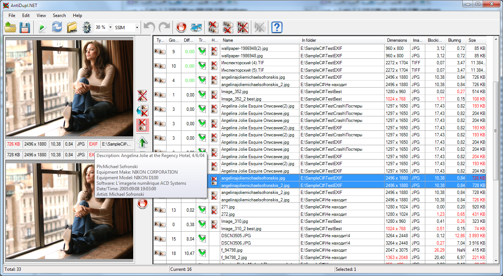

Tool Bar
The toolbar is placed at the top of the main window.
It duplicates the most commonly used actions of Main Menu and Context Menu. The following buttons are placed there:
Open search profile - clicking on the item you can load a previously saved search profile (search settings, search paths and search results).
Save search profile as - this item allows you to save your current search profile with a new name.
Start search - if you click this item then the search will be started.
Refresh results - if you click this item then the search results will be updated.
Paths - opens Paths Window or its simplified version.
Options - opens Options Window.
Algorithm of comparing of images - this parameter duplicates the option from Options Window.
Threshold diffference - this parameter duplicates the option from Options Window.
Undo (Ctrl-Z) - allows you to undo the last action the user.
Redo (Ctrl-Y) - allows you to repeat the previously undone action.
- Mark selected results as a mistakes. This button allows saving this selected user group results (defective pictures and duplicative pairs) in database error.
- Process selected results automatically. When you click this button, the computer will perform its recommended actions on the group of the results selected by user.
or
- Delete first pictures in selected results. It allows removing all first pictures from duplicative pairs selected by user.
or
- Delete second pictures in selected results. It allows removing all second pictures from duplicative pairs selected by user.
or
- Delete all duplicated pictures in selected results. It allows removing all duplicated pictures selected by user.
or
- Delete defect pictures in selected results. It deletes all defect pictures, who selected by user.
Help - if you click the item, then help system will be opened.
The visibility of the toolbar can be determined by using of the item View - Toolbar of the Main Menu.